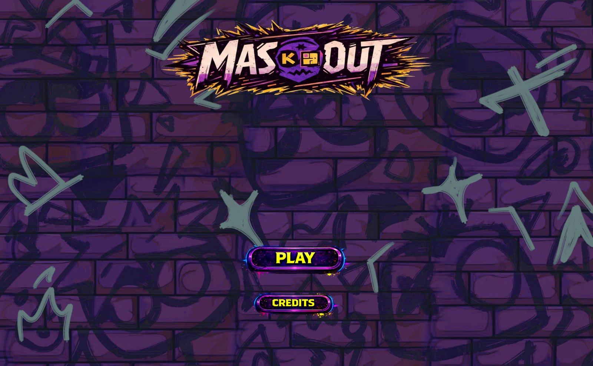

Mask the Platforms · Build Your Path

MaskOut
A 2D puzzle-platformer built for Global Game Jam around the theme "Mask": hold F and click or drag to mask platforms, reveal hidden routes and make your own way to the exit. I did all of the development and technical art, integrated the UI, animated the character from the provided sprites and integrated the VFX. Finished and playable in your browser on itch.io, with only refinement left.